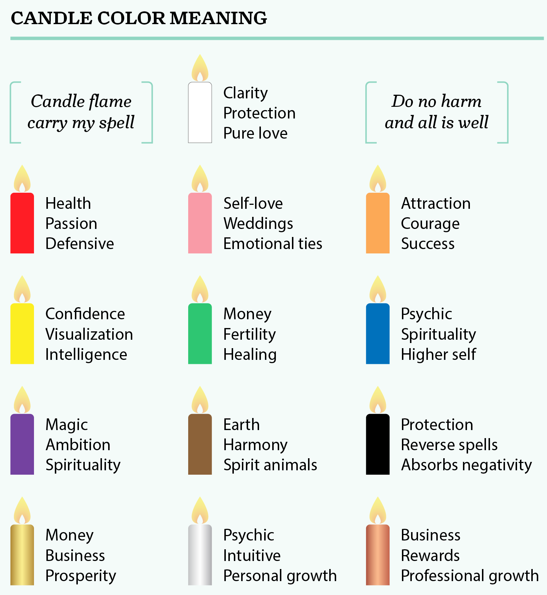

The Hot Witch Birthday Candle Wax Reading Ceremony
This is not a porn site.
The original hot witches.
What you Need
You want to gather natural materials so you can tap into the Earth’s energies. Appoint a hot witch in your group each responsible for:
- Cleansing the space
- Blessing the water
- Guiding the ceromancy
Supplies you need:
- Scrying bowl (ceramic or glass)
- sage
- Water in a carafe
- White candle
- Candle
- Matches
- Paper
- Pencils for everyone
Step Zero: Appoint Hot Witch Roles
Apart from the birthday with, you’ll need a:
- Cleansing Witch
- Blessings Witch
- Guide Witch
These 3 roles can be combined in one hot motherfucker witch, if necessary.
Step 1: Choose Your Candle Color
You want to select a candle color that best matches your intentions. For example, if you are scrying for a financial or money issue, then select either a green or gold candle.

Step 2: Light the Scrying Candle
The hot birthday with lights the Scrying Candle, using matches, while saying: “Candle flame carry my spell, do no harm and all is well.” The burning candle should stay close to the group for the evening until the ritual begins, so it can absorb the divine energy of the group.
Step 3: Cleanse Space
You will use either sage or another favorite incense to clear the space you intend to use while scrying. If you have a ritual you practice for space clearing, you can use it. You can either sit at a table, altar or on the floor, according to what is most comfortable for you.
Step 4: Light White Candle
You will need to set the white candle in its holder and light it as part of your cleansing ritual. Chant the following in your group, while the hot cleansing witch is cleaning the area by burning sage: “ We replace any negative energy in this space with our highest and best energy.” The person burning sets the end of the cleaning process.
Step 5: Open a Protective Circle and Meditate
You should open a protective circle the same as you would for any spellwork. You will all assume a comfortable position and spend a few minutes in meditation to clear your thoughts and energy field. The hot birthday witch will meditate and think of a question she wants answered, while the other hot witches channel their energy towards the hot birthday witch to support her in that endeavor.
Step 6: Fill Scrying Bowl
You will pour the natural water you intend to use into your scrying bowl.
Step 7: Bless the water
Everybody holds their hands over the water and says 3 times: “I exorcise thee, oh creature of water, of all negativity both seen and unseen, and bless thee in the name of the divine goddess.” The hot blessing witch stirs the water with their hand 3 times clockwise. Then everyobody says: “I cleanse and consecrate this water in the name of the divine goddess, may this liquid enhance and purify all that it touches, so mote it be!”
Step 8: Form Your Question of Inquiry
The hot birthday witch will use the paper and pencil to write down her question. You want to be very clear and precise in forming your question.
Step 9: Light Scrying Candle
The hot birthday witch will light the candle you selected for scrying. Repeat your question aloud and hold it in your mind while holding the candle over the water. The group will repeat the question aloud over and over again. You’ll let the wax drip into the water. Don’t touch the bowl while you drip wax into the water. Once you are satisfied that you’ve let enough wax fall into the water, you can extinguish the candle and set it down. Only when the candle is out, the group can stop chanting the question.
Step 10: Scry the Candle Wax
Everybody take a deep breath and focus on the wax in the scrying bowl. You will note any shapes the drippings form. Everyone can write them down on their own paper, using a pen. No talking. You should write down any psychic or intuitive impressions or messages you receive.
Step 11: Interpreting Candle Wax Meanings in the hot witches group
Discuss your interpretations in the group. Interpreting the wax drippings may take some time. You should first and foremost trust your intuition. A few tips include:
Shapes can have literal meanings, such as circle represents the closing of a circle, or a triangle may indicate a love triangle or opposition. Numbers may be related to the calendar and represent days, weeks, months, and so on. Numbers may represent a specific time such as hours, minutes, or seconds. Number may be a combination of a date and time. Letters can represent the initials of a person, place, or event. Animal shapes can be literal or represent an animal spirit guide.
While number, shapes, and letters are cool, mostly likely you’ll end up with various abstract forms floating on the water. This is why your intuition and psychic abilities are so important when interpreting the message of your candle wax scrying. You should always trust your psychic impressions over all things. The meanings of melted candle wax patterns can help you tap into your psychic and intuitive self.
To help you interpreting, this fellow witch has some suggestions.
Step 12: Close Protection Circle
You want to close your circle when you are finished with your scrying. You will then extinguish the white candle.